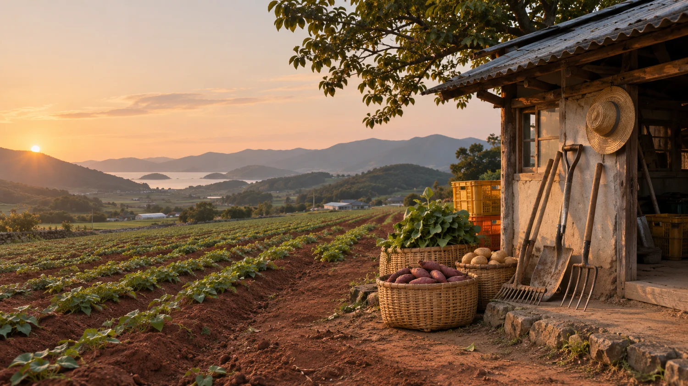

트리플영농조합법인 연혁
확인된 자료를 바탕으로 구성한 연혁 예시입니다.
-
트리플영농조합법인 설립
전남 무안에서 친환경 농산물의 생산과 공급을 시작했습니다.
-
주요 사업
학교급식 공급과 고구마 가공
무안군 학교급식에 친환경 식재료를 공급하고, 설레고 등 고구마 가공품을 소개합니다.
-
KBS 6시 내고향 소개
무안 직거래 장터 편에서 트리플영농조합법인의 양배추가 소개됐습니다.
KBS 방송정보 ↗

회사 소개